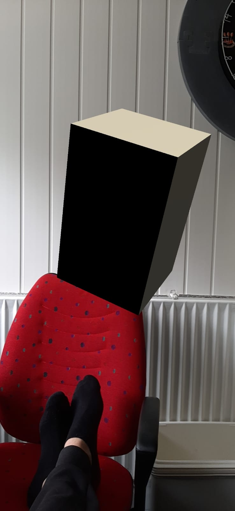
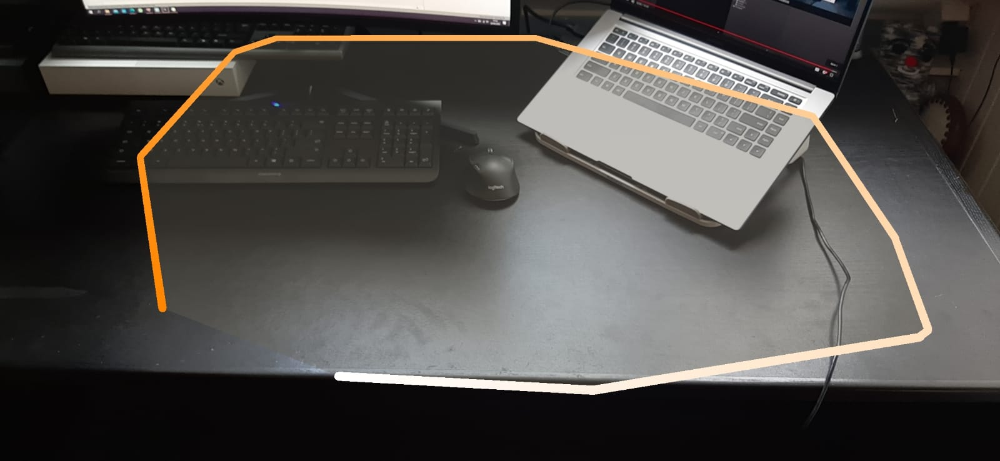

Research
⇑Inspiration is an important part of the design process, so first I set out to find interesting projects in the VR/AR space.
Bravemind - VRET (Virtual Reality Exposure Therapy)
Although I genuinely think that gaming and other passtimes are vitally important, I find myself more drawn to social and practical applications of VR.
Bravemind is an example of one of those applications. It’s a VR application designed by the University of Southern California to help soldiers in dealing with their PTSD. VR is especially helpful in this field, because it can take up all senses and truly immerse you. They describe that people who didn’t respond to traditional exposure treatments (using more static images or movies), responded well to VRET.
Another advantage is that it’s very scalable, i.e. the therapist can easily decide how much exposure the patient gets and how intense the exposure is.
Read moreRijksuniversiteit Groningen - VR-CGT (VR Cognitive-Behavioural Therapy)
The university of Groningen has done similar research to what I described before: they are using VR to help schizophrenic patients cope with their mental illness.
On their website, they highlight the case of Edwin, one of the patients treated with VR. What I thought was interesting is that Edwin actually does go outside, but still has trouble with his illness. This tells me that it’s different than just exposure therapy, since he does actually expose himself to the thing he’s afraid of.
VR-CGT is more therapeutic than just exposure therapy, where the therapist actually discusses the encounters with the patient and guides them to get more in touch with what they’re feeling and why they are feeling it.
Read more Edwin's videoAkili Interactive - EndeavourRX
Okay, not really VR. But this is a game that is proven to help in the treatment of ADHD in kids, which I found really cool. This is one of the very few concreate pieces of evidence I've been able to find that actually prove that video games can help in treating a psychological issue.
It's recently been approved by the FDA for use in ADHD treatment. I've mailed the company, but I'm unfortunately unable to see or play the game for myself.
Read moreWithin - Supernatural
I’m a huge fan of gamification. I’ve been using it myself in a few instances and I’ve seen what it can do to put yourself into a different state of mind. In some ways you’re essentially tricking your brain into thinking that you’re doing something fun, while you’re actually doing something boring.
Supernatural is one of those projects that gamifies personal health. Everyone wants to be fit in their own way, but not everyone actually takes the step to work on it. And if they do, most people stop after it’s no longer a new experience and eating healthy and going to the gym starts to become boring. On one hand, going to the gym often takes too much effort; you have to get into your gym outfit, actually go there, interact with people, etc. On the other hand, having a home gym can take away some of this effort, but it isn’t really feasible for most people.
I think VR can play a big role in this. VR can make doing workouts at home interesting and make sure it’s a new experience every time. I like the direction Supernatural is taking. A lot of people are already using games like Beatsaber as a workout – imagine what a VR app like Supernatural that’s tailor-made for providing you with a workout can do for the fitness industry! It’s a shame that right now it just kind of looks like Beatsaber but in a realistic landscape and with a coach…
Read more Gameplay videoWithin - Sanctuaries of Silence
The realistic landscapes I described in the previous paragraph was also a point of inspiration, but for the opposite reason. People see too little nature these days, and there isn’t much quiet either.
As I said in the VRelax section, being in a natural environment can help with feelings of stress and depression. With an experience like Sanctuaries of Silence, you can use VR to transport yourself to a natural location and - when you use proper (noise-cancelling) earphones - experience some quiet as well.
Watch itExperiment & Play
⇑Back to the Drawing Board
So, I did exersizes for Unreal, which I didn't like at all. Then I used Blender, which I liked, but wasn't functional for VR. Then I started playing with Unity. First I followed this tutorial for setting up ARCore. After about 2 hours of ...ing around and it crashing on me, I gave up and went to AR Foundation in Unity. I followed this tutorial, which worked a lot better and actually yielded me some results:
I followed some of the videos from the playlist and got to coding something that actually properly tracks stuff. Lo and behold, I got more errors that I was unable to fix after 4 more hours of fucking around. After following yet another tutorial I finally got something working:
It's my very own unity app that detects horizontal surfaces. Pretty cool!
Unity Gameplay
After some talks with my friends over Skype / Discord we concluded that meeting eachother in-person was a lot more fun and a lot more practical. Not only because actually seeing eachother is better than seeing eachother on a screen, but also because you can have multiple conversations going at once. This gave me an idea: why not use some simple VR to replace video-conferencing so that you can easily break off into a separate conversation with a part of your group?
To start, I followed this series of tutorial videos on how to make some stuff in Unity work and program functions in C#. I built a small "game" with controls and physics. Long story short: here are the results:
Doing some more research on positional audio brought me to this tutorial. The positional audio was surprisingly easy to figure out, after a few tries.
Design & Build
⇑To actually make it look like something people would want to use, I looked around on the web for more tutorials on rigging and humanoid player characters. I also designed the environment so that there are different locations for you to have a meeting in and I made sure that the player character actually outputs sound from the players microphone.
Showcase
⇑Inspiration is an important part of the design process, so first I set out to find interesting projects in the VR/AR space.